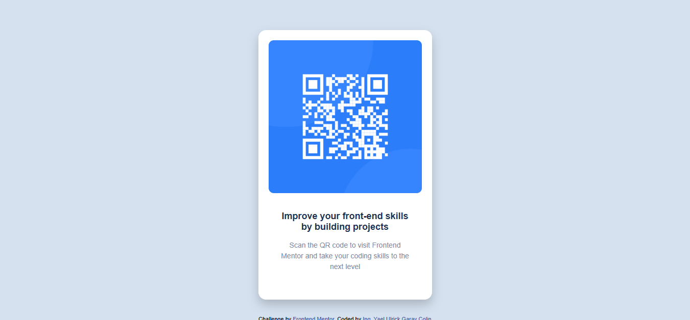

Código QR
El objetivo fue practicar HTML y CSS básico, centrar un contenedor en pantalla y trabajar con **Flexbox** para alinear los elementos.
Soluciones a desafios de Frontend Mentor
El objetivo fue practicar HTML y CSS básico, centrar un contenedor en pantalla y trabajar con **Flexbox** para alinear los elementos.

Construir un componente de tarjeta con un de blog. El objetivo fue practicar HTML y CSS básico, centrar un contenedor en pantalla y trabajar con Flexbox para alinear los elementos.
El objetivo fue practicar HTML y CSS básico, centrar un contenedor en pantalla y trabajar con Flexbox para alinear los elementos.
El objetivo fue practicar HTML y CSS básico, centrar un contenedor en pantalla y trabajar con Flexbox y el uso de tablas.
El objetivo fue practicar el responsive con CSS, centrar un contenedor en pantalla y trabajar con Flexbox para alinear los elementos.
El objetivo fue perfeccionar con la practia para quienes quieran poner a prueba sus conocimientos de CSS Flexbox. La cual es una herramienta tan potente para CSS que vale la pena familiarizarse con ella.
Este proyecto es una solución al reto de Frontend Mentor para construir una Carta.
El objetivo fue perfeccionar con la practia para quienes quieran poner a prueba sus conocimientos de CSS Grid. Grid es una herramienta tan potente para CSS que vale la pena familiarizarse con ella.
El objetivo fue perfeccionar con la practia para quienes quieran poner a prueba sus conocimientos de CSS Grid. Grid es una herramienta tan potente para CSS que vale la pena familiarizarse con ella.